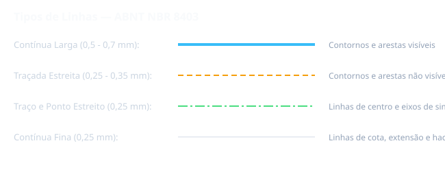

Situação de Aprendizagem 3: Linhas e Escalas
3.1 Tipos de Linhas (NBR 8403)
As linhas em desenho técnico têm significados específicos e são classificadas conforme sua largura e aplicação:

| Tipo de Linha | Largura | Aplicação |
|---|---|---|
| Contínua Grossa | 0,7 mm | Contornos visíveis, arestas visíveis |
| Contínua Média | 0,35 mm | Linhas de cota, linhas de projeção, linhas de auxílio |
| Contínua Fina | 0,18 mm | Linhas de eixo, linhas de simetria, linhas de centro |
| Tracejada Grossa | 0,7 mm | Arestas invisíveis, contornos invisíveis |
| Tracejada Média | 0,35 mm | Linhas de centro-tracejada para elementos simétricos |
| Tracejada Fina | 0,18 mm | Linhas de limitação de representação parcial |
| Contínua-Fina | 0,18 mm | Linhas de cota (traverse), linhas de projeção |
| Tracejada-Grossa | 0,7 mm | Linha de corte e seção |
3.2 Escalas (NBR 8196)
A escala é a relação entre a medida do desenho e a medida real do objeto:
| Tipo de Escala | Expressão | Exemplo | Uso |
|---|---|---|---|
| Natural | 1:1 | 1 mm no desenho = 1 mm na peça | Pecas pequenas |
| Redução | 1:X (X>1) | 1:2, 1:5, 1:10, 1:20 | Pecas grandes |
| Ampliação | X:1 (X>1) | 2:1, 5:1, 10:1 | Pecas pequenas/detalhes |
3.3 Escalas Mais Utilizadas
Recomendações SENAI: As escalas mais utilizadas em desenho mecânico são: 1:1 (natural), 1:2, 1:5, 1:10, 2:1 e 5:1.
3.4 Representação de Escala no Desenho
A escala deve ser indicada na legenda do desenho, sempre junto ao campo destinado à identificação do desenhista.
Importante: Quando o objeto está desenhado em escala natural (1:1), é opcional indicar a escala na legenda.